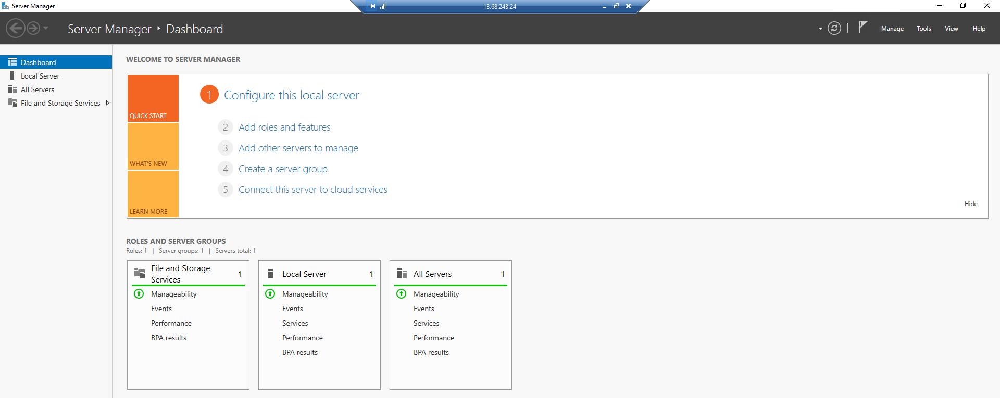
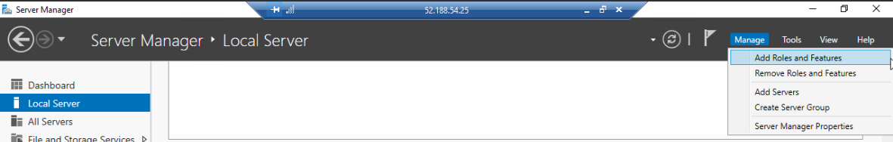
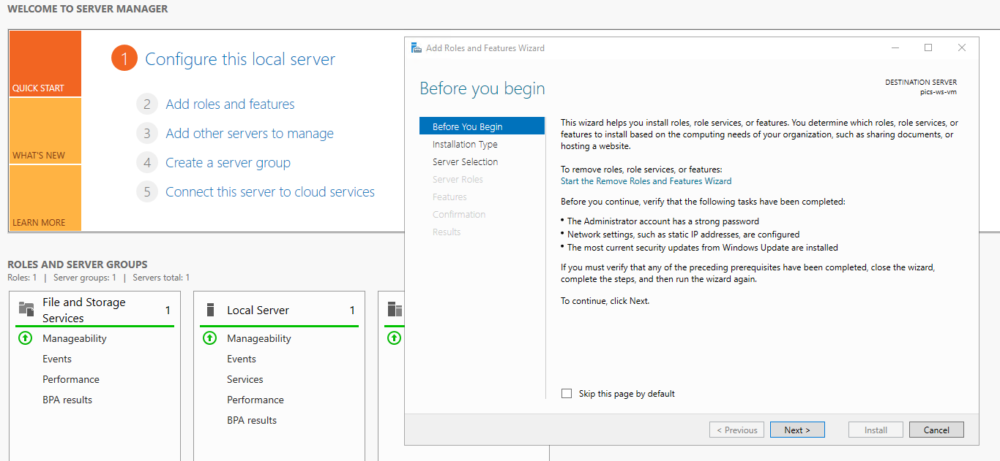
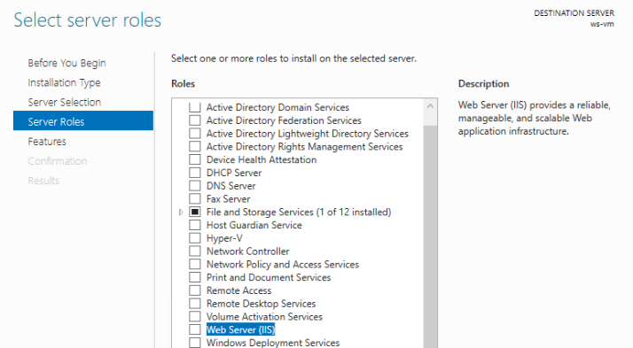
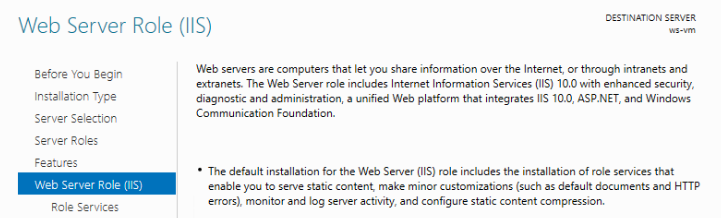
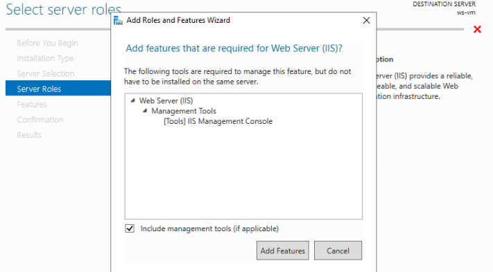

Previously, we used the Azure web portal to provision and deploy our API to an Ubuntu Linux VM. In order to execute commands and scripts to configure the deployment, we used the RunCommand tool that was built into the web portal.
Today we will learn about one of the other choices of OS for hosting our web applications, Windows Server. Now that you are more comfortable working away from the web portal, we will also learn how to remotely access our new Windows Server VM from outside of the browser.
Windows Server (WS) is built on top of the same base as the PC-grade Windows 10 operating system but has been customized for use as a server. Servers naturally have greater operational demand than personal computers (PC). While there are many Windows 10 editions, from consumer to enterprise, none of them are optimized for server workloads like WS. As a result, WS has been designed to manage significantly greater memory and CPU allocations than are typically needed on a PC.
Fun Fact
Operating systems have limits to the hardware they can manage. One machine running Windows Server is capable of managing an incredible 24 terabytes of RAM and any number of CPU cores!
Because WS is designed for computing, it strips away many of the applications and features that are meant for personal computers. The result is a smaller software footprint that reduces resource usage. These savings may seem small for individual machines but can be appreciable when managing large fleets of servers.
A smaller OS also means fewer applications to managed and protect against potential vulnerabilities. The reduced attack surface of the slimmer OS is complemented by sensible firewall defaults and other restrictions that further bolster its security profile relative to a PC.
The default Windows Server VM image includes a full GUI shell just like Windows 10. The WS Desktop Experience installation option makes working with WS as familiar as working on your machine at home. While it gets rid of consumer applications, it does include a collection of administrative tools like the Server Manager we will be using in this class.
Windows Server also comes in a nearly headless Core option which removes the majority of the desktop GUI, leaving only a PowerShell terminal. Windows Server Core is even leaner than WS Desktop, allowing you to start from the core and add just the features and applications you need. Windows Server Core represents an unopinionated server OS that leaves it to you to customize exactly what is needed for your use case. You can read more about the WS Core design and comparison to the more opinionated WS Desktop Experience in this article. Throughout this class, we will be working with Windows Server Desktop, but WS Core is a popular option you should be aware of.
The Windows Server Manager is a powerful GUI-based tool for monitoring and managing your Windows Server. Windows Server Manager comes pre-installed on the WS Desktop Edition, but can be manually installed on your Windows 10 PC as well. In more advanced contexts, the Server Manager (SM) can even be used to manage multiple physical or virtual WS machines.
The Server Manager is the entry point of the WS VM and is presented to you after opening a Remote Desktop session, which we will explore in a following lesson.
Within the SM, you can configure many aspects of the server including updates, storage access, firewall, and other security settings. The Server Manager can also be used to monitor the performance of a server with live insights into its memory, disk, and CPU usage.
In this course, we will use the SM to manage the Roles and Features of the local server (local relative to the machine the SM is running on). The Roles and Features wizard can be used to install and configure additional tooling like, the IIS Web Server Manager, which we will cover in later lessons.
Windows Server uses a system of Roles, Role Services, and Features to fine-tune each VM’s behavior according to business needs. Let’s explore what each of these components are and how they are used to customize a server’s purpose, such as operating as a Web Server host.
Configuring the responsibility and behavior of a VM is made simple thanks to the Roles and Features wizard available in the Server Manager:
Within a network or a sub-group of servers called a server pool, each server has some designated responsibilities. Roles are the way that WS assigns and configures the responsibilities of each server within that network or pool. Windows Servers have dozens of Roles to choose from, each with their own set of corresponding Role Services and Features.
For example, our VM will have the responsibility of acting as a Web Server. We will use the Web Server (IIS) Role to designate this responsibility of hosting static sites and .NET web applications.
Once our server has assumed this Role, we will gain access to installing the Role Services and Features needed to operate as a web host.
Role Services are background tools needed for a server to support the behavior of a Role. Some Roles do not rely on any additional services. Others, like the Web Server Role, depend on many underlying services. For the Web Server Role, the minimum Role Services needed provide it the ability to host static sites and media content.
Fortunately, WS provides opinionated defaults for operating as a secure and efficient Web Server which makes it a breeze to configure.
Depending on the use cases you encounter in the future, additional Role Services may be needed to provide support for things like authentication and caching at the web server level.
Features are applications that can be installed on a server for managing and further customizing a machine’s capabilities. Some of them are directly related to Roles while others operate independently. When a Role has a direct dependence on particular Features, a dialog box will notify you when selecting that Role.
For our server to function as a Web Server using IIS, we will need to install a Feature called the IIS Management Console. When selecting the Web Server Role, a dialog box prompts us to install this IIS Console that is needed for configuring hosting.
We will install the IIS Console on the VM, but as noted in the dialog box, it can also be installed on another machine to manage the IIS settings remotely.
Windows Server is a powerful server OS for handling a variety of use cases. It is deeply customizable and, unlike Linux servers, promotes the use of a full desktop GUI for intuitive configuration. For this course, we will assign our WS VM the Web Server Role and configure IIS to host our .NET API. Up next, we will learn more about IIS and how it enables us to host our web applications.